# Load libraries
library(presto)
library(ggplot2)
library(Seurat)
library(tidyverse)
library(patchwork)
library(paletteer)
library(msigdbr)
library(ComplexHeatmap)
library(circlize)
library(SingleCellExperiment)
library(muscat)
library(limma)
library(scuttle)
library(lemon)
library(ggforce)
library(cowplot)
library(speckle)
library(knitr)10 Skin: Deep phenotyping, cluster annotation, and exploration of Post vs Pre 3rd vaccination differences in cell proportions and expression
10.1 Set up Seurat workspace
10.2 Load previous saved object
merged.18279.skin.singlets <- readRDS("Skin_scRNA_Part8.rds")10.3 Set up cluster groupings by cell class
cluster_annot <- c(
"0" = "MonoMac_1",
"1_0" = "CD4_T_Naive/CM",
"1_1" = "CD4_T_CTL",
"2_0" = "CD8_T_EM_1",
"2_1" = "CD8_T_Naive/CM_1",
"2_2" = "CD8_T_EM_2",
"3" = "MonoMac_2",
"4_0" = "CD8_T_Naive/CM_2",
"4_1" = "CD8_T_Naive/CM_3",
"5_0" = "NK/T_1",
"5_1" = "NK/T_2",
"5_2" = "NK_cells",
"6_0" = "T_unknown_1",
"6_1" = "CD8_T_EM_3",
"7" = "cDC2",
"8" = "Keratinocytes",
"9_0" = "Treg_1",
"9_1" = "Treg_2",
"10" = "Fibroblasts",
"11_0" = "T_unknown_2",
"11_1" = "T_unknown_3",
"12" = "MonoMac_3",
"13_0" = "Proliferating_T_cells_1",
"13_1" = "Proliferating_T_cells_2",
"14" = "pDC",
"15" = "DC_LAMP3",
"16" = "Mast",
"17" = "Endothelial",
"18" = "cDC1",
"19_0" = "NK/T_3",
"20" = "Pericytes/smooth_muscle",
"21" = "Basal_1",
"22" = "MonoMac_4",
"23" = "B_cells",
"24" = "Basal_2",
"25" = "Macrophages",
"26" = "Proliferating_cDC2"
)
clustLabels <- as.data.frame(cluster_annot)[merged.18279.skin.singlets$sub.cluster,]
merged.18279.skin.singlets <- AddMetaData(merged.18279.skin.singlets, list(clustLabels), col.name = "CellAnnotation")10.4 Set up broader cell classes
cluster_classes <- enframe(cluster_annot,name = "sub.cluster",value = "CellAnnotation") %>%
as_tibble() %>%
mutate(CellClass = case_when(
sub.cluster %in% c("0","3","12","22","25") ~ "Monocyte/\nMacrophage",
sub.cluster %in% c("14","18","7","26","15") ~ "DC",
sub.cluster %in% c("23") ~ "B",
sub.cluster %in% c("5_2","5_0","5_1","19_0","2_1","4_0","4_1","2_0","2_2","6_1","1_0","1_1","9_0","9_1","13_0","13_1","6_0","11_0","11_1") ~ "NK/T",
sub.cluster %in% c("16") ~ "Mast",
sub.cluster %in% c("8","10","17","20","21","24") ~ "Non-immune"
)
) %>%
dplyr::select(-CellAnnotation) %>%
column_to_rownames(var = "sub.cluster") %>%
as.data.frame()
clustClasses <- cluster_classes[merged.18279.skin.singlets$sub.cluster,]
merged.18279.skin.singlets <- AddMetaData(merged.18279.skin.singlets, list(clustClasses), col.name = "CellClass")10.5 Plot original UMAP labeled by sub-cluster
merged.18279.skin.singlets$CellAnnotation <- factor(x = merged.18279.skin.singlets$CellAnnotation,
levels = as.character(cluster_annot))
DimPlot(merged.18279.skin.singlets,
label = FALSE,
reduction = "umap.harmony",
group.by = "CellAnnotation")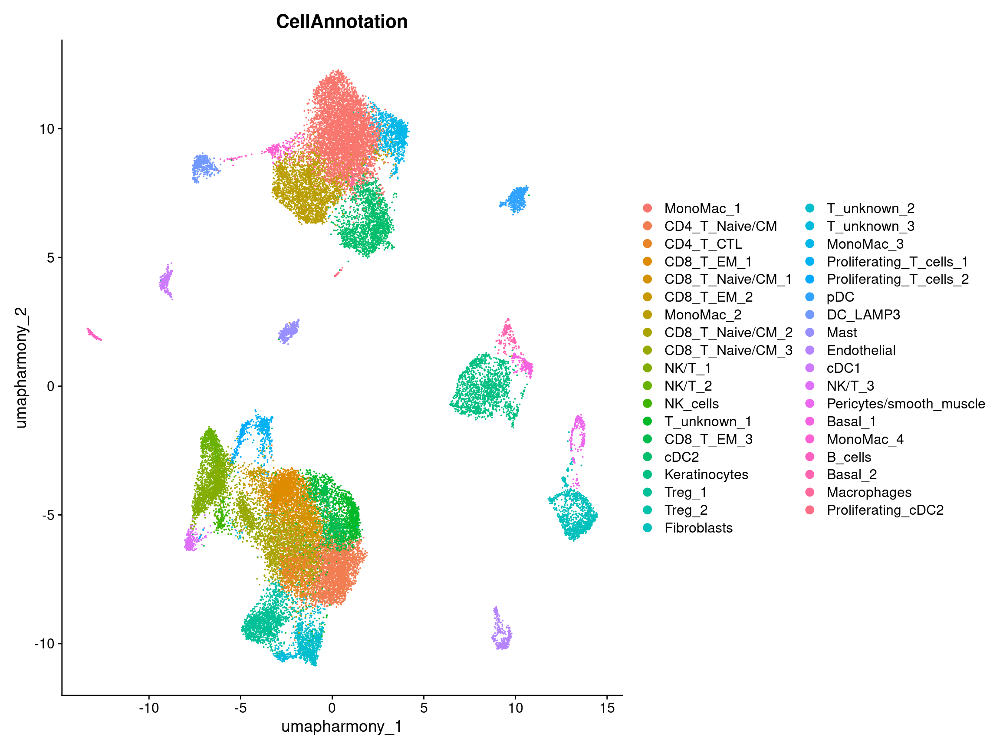
10.5.1 Plot again split by Timepoint
merged.18279.skin.singlets$CellAnnotation <- factor(x = merged.18279.skin.singlets$CellAnnotation,
levels = as.character(cluster_annot))
merged.18279.skin.singlets$Timepoint <- factor(x = merged.18279.skin.singlets$Timepoint, levels = c("Pre3rd", "Post3rd"))
DimPlot(merged.18279.skin.singlets,
label = FALSE,
reduction = "umap.harmony",
group.by = "CellAnnotation",
split.by = "Timepoint")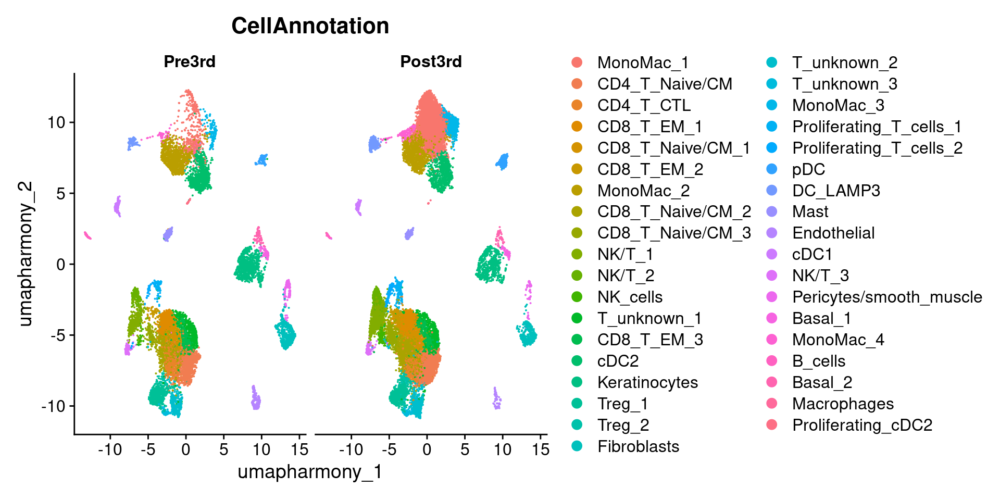
10.6 Plot original UMAP labeled by broader cell class
DimPlot(merged.18279.skin.singlets,
label = FALSE,
reduction = "umap.harmony",
group.by = "CellClass")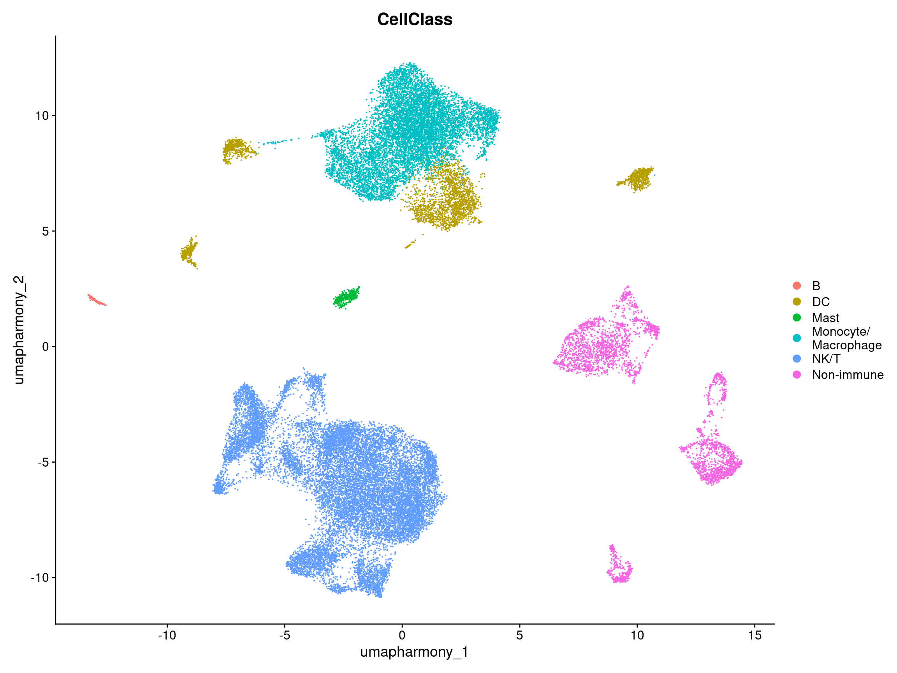
10.6.1 Plot again except split by Timepoint
DimPlot(merged.18279.skin.singlets,
label = FALSE,
reduction = "umap.harmony",
split.by = "Timepoint",
group.by = "CellClass") +
theme_classic() +
theme(panel.border = element_rect(colour = "black",fill = NA)
)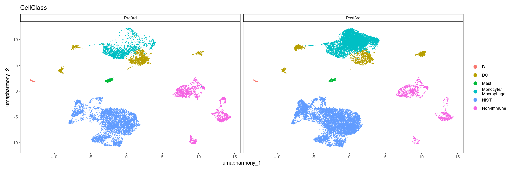
10.7 Now plot all cluster annotations using only ggplot functions, useful later
umap <- rownames_to_column(as.data.frame(Embeddings(merged.18279.skin.singlets,reduction = "umap.harmony")),var="Barcode") %>%
as_tibble() %>%
left_join(enframe(merged.18279.skin.singlets$sub.cluster,name = "Barcode",value="sub.cluster"),by="Barcode") %>%
left_join(enframe(merged.18279.skin.singlets$CellAnnotation,name = "Barcode",value="CellAnnotation"),by="Barcode")
umap %>%
ggplot(aes(x = umapharmony_1, y = umapharmony_2, color = CellAnnotation)) +
geom_point(size=0.25) +
theme_bw()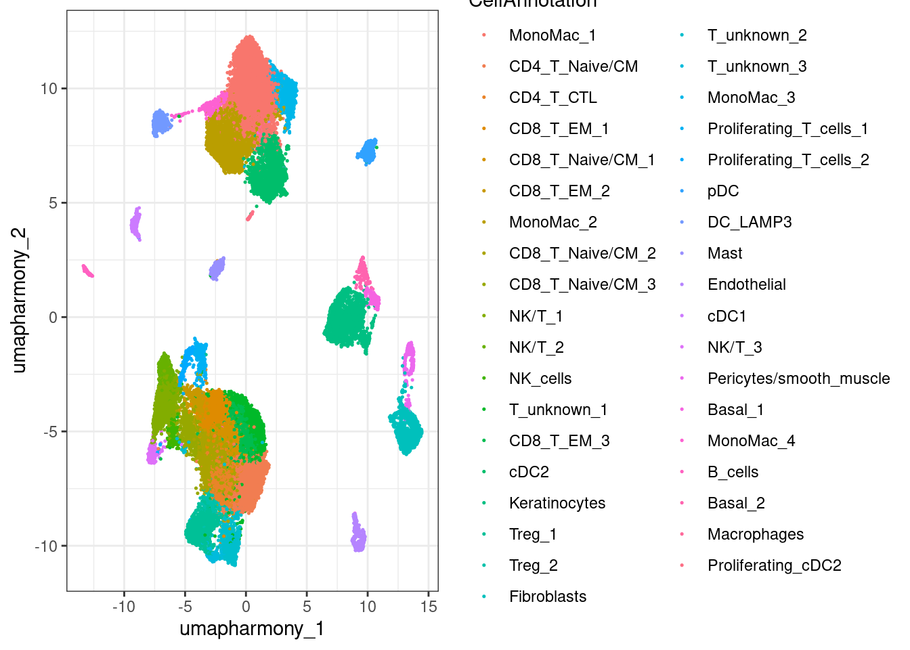
10.8 Plot UMAP split by Ipilimumab concentration cohort and Timepoint
rownames_to_column(as.data.frame(Embeddings(merged.18279.skin.singlets,reduction = "umap.harmony")),var="Barcode") %>%
as_tibble() %>%
left_join(enframe(merged.18279.skin.singlets$sub.cluster,name = "Barcode",value="sub.cluster"),by="Barcode") %>%
left_join(enframe(merged.18279.skin.singlets$CellClass,name = "Barcode",value="CellClass"),by="Barcode") %>%
mutate(Timepoint = str_split_i(Barcode,pattern = "_",i = 3)) %>%
mutate(IpiCohort = str_split_i(Barcode,pattern = "_", i = 4)) %>%
ggplot(aes(x = umapharmony_1, y = umapharmony_2, color = CellClass)) +
geom_point(size = 0.25) +
facet_grid(IpiCohort ~ fct_relevel(Timepoint,c("Pre3rd","Post3rd"))) +
theme_bw() +
geom_text(aes(x, y, label = lab),
data = data.frame(x = 13,
y = 14,
lab = c(paste0("n = ", table(merged.18279.skin.singlets$IpiCohort,merged.18279.skin.singlets$Timepoint)[1,1]),
paste0("n = ", table(merged.18279.skin.singlets$IpiCohort,merged.18279.skin.singlets$Timepoint)[1,2]),
paste0("n = ", table(merged.18279.skin.singlets$IpiCohort,merged.18279.skin.singlets$Timepoint)[2,1]),
paste0("n = ", table(merged.18279.skin.singlets$IpiCohort,merged.18279.skin.singlets$Timepoint)[2,2])
),
Timepoint = c("Pre3rd","Post3rd","Pre3rd","Post3rd"),
IpiCohort = c("2.5mgIpi","2.5mgIpi","5mgIpi","5mgIpi")
),
inherit.aes = FALSE
)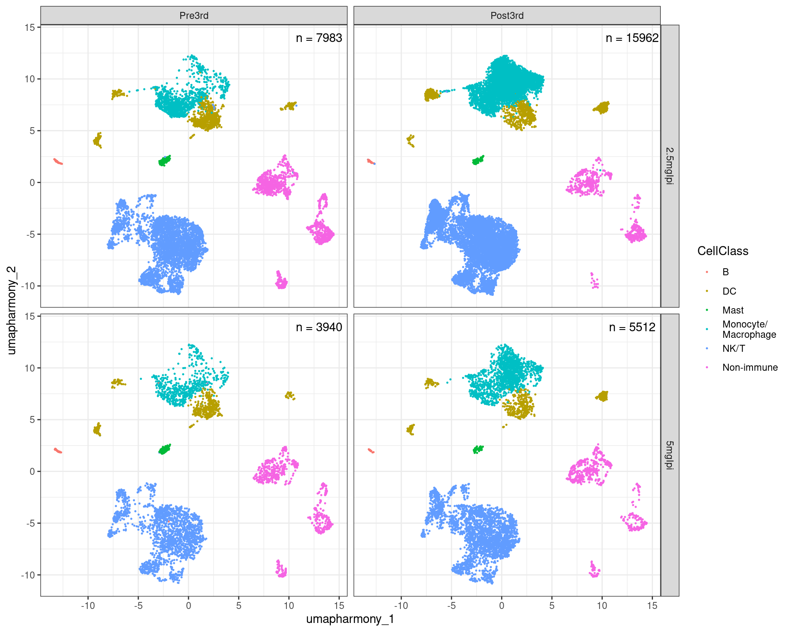
10.9 Plot large heatmap demonstrating marker gene selectivity and cluster identity
merged.18279.skin.singlets[['RNA']] <- JoinLayers(merged.18279.skin.singlets[['RNA']])
merged.sce <- as.SingleCellExperiment(merged.18279.skin.singlets, assay="RNA")
(mergedCondition.sce <- prepSCE(merged.sce,
kid = "sub.cluster",
gid = "Timepoint",
sid = "Sample",
drop = TRUE))class: SingleCellExperiment
dim: 61217 33397
metadata(1): experiment_info
assays(2): counts logcounts
rownames(61217): 5-8S-rRNA 5S-rRNA ... ZZEF1 ZZZ3
rowData names(0):
colnames(33397): P101_Skin_Pre3rd_2.5mgIpi_RNA_GCACATAAGTGCCATT
P101_Skin_Pre3rd_2.5mgIpi_RNA_GGAACTTGTCGCGGTT ...
P111_Skin_Post3rd_5mgIpi_RNA_ACGATGTTCCTAGGGC
P111_Skin_Post3rd_5mgIpi_RNA_GAACATCAGCCACGTC
colData names(3): cluster_id sample_id group_id
reducedDimNames(4): PCA UMAP.UNINTEGRATED INTEGRATED.HARMONY
UMAP.HARMONY
mainExpName: RNA
altExpNames(0):all_genes_to_plot <- c("PTPRC","TCF4","TNFSF10","S100A8","S100A9","RNASE1","MARCO","SIGLEC1","CD14","ITGAM","ITGAX","FCN1","APOBEC3A","SERPINA1","FOLR2","LILRB5","CD163","APOE","FABP5","LIPA","APOC1","TREM2","CD68","CSF1R","FCGR3A","C1QA","C1QB","C1QC","ICAM1","LGALS9","CD40","CD80","CD86","HLA-DRA","HLA-DRB1","HLA-DQA1","HLA-DQA2","HLA-DQB1","HLA-DQB2","IL3RA","IRF4","IRF8","CLEC4C","CLEC9A","CLEC10A","CD1C","CD1E","FCER1A","CD207","MARCKSL1","FSCN1","LAMP3","LY75","FLT3","CD274","BANK1","CD79A","MS4A1","CD19","NCR1","NCAM1","CD3E","CD3G", "CD4","CD8A","TRAC","TRBC1","TRBC2","TRDC","IL7R","CCR7","SELL","CD27","TCF7","CXCR6","CCR6","NKG7","GNLY","GZMA","GZMB","PRF1","PDCD1","LAG3","TIGIT","CTLA4","TOX","BATF","TNFRSF4","ICOS","IL2RA","FOXP3","TNFRSF18","KIT","MKI67","TOP2A","HPGD","CPA3","SFN","CXCL14","CAV1","DCN","LUM","PECAM1","VWF","TAGLN","CALD1","KRT5","DMKN","TACSTD2")
cluster_order <- c("0","3","12","22","25","14","18","7","26","15","23","5_2","5_0","5_1","19_0","2_1","4_0","4_1","2_0","2_2","6_1","1_0","1_1","9_0","9_1","13_0","13_1","6_0","11_0","11_1","16","8","10","17","20","21","24")
slice_order <- factor(cluster_classes[cluster_order,], levels = unique(cluster_classes[cluster_order,]))
gene_categories <- enframe(all_genes_to_plot,name=NULL,value="Gene") %>%
as_tibble() %>%
mutate(GeneClass = case_when(
Gene %in% c("PTPRC") ~ "Immune",
Gene %in% c("TCF4","TNFSF10","S100A8","S100A9","RNASE1","MARCO","SIGLEC1","CD14","ITGAM","ITGAX","FCN1","APOBEC3A","SERPINA1","FOLR2","LILRB5","CD163","APOE","FABP5","LIPA","APOC1","TREM2","CD68","CSF1R","FCGR3A","C1QA","C1QB","C1QC","ICAM1","LGALS9") ~ "Monocyte/\nMacrophage",
Gene %in% c("CD40","CD80","CD86","HLA-DRA","HLA-DRB1","HLA-DQA1","HLA-DQA2","HLA-DQB1","HLA-DQB2","IL3RA","IRF4","IRF8","CLEC4C","CLEC9A","CLEC10A","CD1C","CD1E","FCER1A","CD207","MARCKSL1","FSCN1","LAMP3","LY75","FLT3","CD274") ~ "Dendritic\ncell",
Gene %in% c("BANK1","CD79A","MS4A1","CD19") ~ "B cell",
Gene %in% c("NCR1","NCAM1") ~ "NK cell",
Gene %in% c("CD3E","CD3G","CD4","CD8A","TRAC","TRBC1","TRBC2","TRDC","IL7R","CCR7","SELL","CD27","TCF7") ~ "T cell",
Gene %in% c("CXCR6","CCR6","NKG7","GNLY","GZMA","GZMB","PRF1","PDCD1","LAG3","TIGIT","CTLA4","TOX","BATF","TNFRSF4","ICOS","IL2RA","FOXP3","TNFRSF18","KIT") ~ "T cell\nsubsets/\nNK cells",
Gene %in% c("MKI67","TOP2A") ~ "Proliferation",
Gene %in% c("SFN","CXCL14","CAV1") ~ "Keratinocyte",
Gene %in% c("DCN","LUM") ~ "Fibroblast",
Gene %in% c("HPGD","CPA3") ~ "Mast cell",
Gene %in% c("PECAM1","VWF") ~ "Endothelial",
Gene %in% c("TAGLN","CALD1") ~ "Pericyte/\nsmooth muscle",
Gene %in% c("KRT5","DMKN","TACSTD2") ~ "Basal"
)
)
gene_slice_order <- factor(gene_categories$GeneClass, levels = unique(gene_categories$GeneClass))
pb_all <- aggregateData(mergedCondition.sce,
assay = "counts",
fun = "mean",
by = "cluster_id")
all_genes_to_plot <- all_genes_to_plot[all_genes_to_plot %in% rownames(assay(pb_all))]
mat <- assay(pb_all)[all_genes_to_plot,cluster_order]
colnames(mat) <- cluster_annot[cluster_order]
ComplexHeatmap::Heatmap(mat,
col = circlize::colorRamp2(c(0,3),hcl_palette = "viridis"),
cluster_rows = FALSE,
cluster_columns = FALSE,
column_split = slice_order,
row_split = gene_slice_order,
row_title_rot = 0,
cluster_column_slices = FALSE,
border = TRUE,
row_names_gp = gpar(fontsize=6,fontface="italic"),
column_names_gp = gpar(fontsize=8),
column_title_gp = gpar(fontsize=8,fontface="bold"),
row_title_gp = gpar(fontsize=8,fontface="bold"),
name = "Mean expression",
heatmap_legend_param = list(title_position = "leftcenter-rot",border = TRUE)
)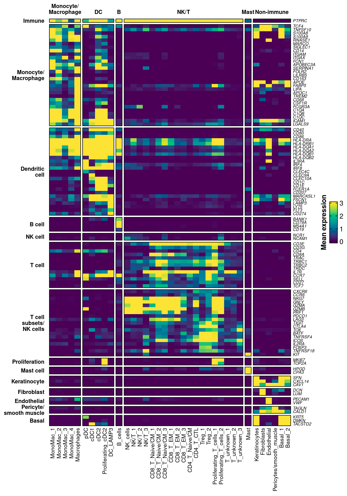
10.10 Plot heatmap of functional genes
functional_genes_to_plot <- c("IDO1","CCL2","CXCL10","CXCL2","CXCL3","IL10","IL18","IL1B","CXCL8","CXCL16","LYZ","IL15","CCL19","CXCL19","TNF","CCL3","CCL4","CCL5","XCL1","XCL2","IFNG","CSF2")
functional_genes_to_plot <- functional_genes_to_plot[functional_genes_to_plot %in% rownames(assay(pb_all))]
fx_mat <- assay(pb_all)[functional_genes_to_plot,cluster_order]
colnames(fx_mat) <- cluster_annot[cluster_order]
ComplexHeatmap::Heatmap(fx_mat,
col = circlize::colorRamp2(c(0,3),hcl_palette = "viridis"),
cluster_rows = FALSE,
cluster_columns = FALSE,
column_split = slice_order,
cluster_column_slices = FALSE,
border = TRUE,
row_names_gp = gpar(fontsize=6,fontface="italic"),
column_names_gp = gpar(fontsize=8),
column_title_gp = gpar(fontsize=8,fontface="bold"),
name = "Mean expression",
heatmap_legend_param = list(title_position = "leftcenter-rot",border = TRUE)
)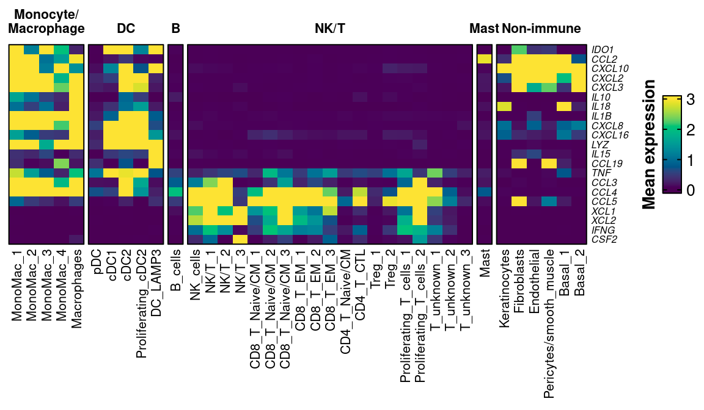
11 Run propeller to test for differential abundance between Post3rd and Pre3rd timepoints
Extract transformed cell proportions then run paired test via limma, modeling repeated measures as random effects. Exclude P109 as we only have data from one timepoint
merged.18279.skin.singlets.paired <- subset(merged.18279.skin.singlets, subset = Patient != "P109")
props_transformed <- getTransformedProps(clusters = merged.18279.skin.singlets.paired$sub.cluster,
sample = merged.18279.skin.singlets.paired$Sample,
transform = "logit")Performing logit transformation of proportionssample <- levels(as.factor(merged.18279.skin.singlets.paired$Sample))
patient <- str_replace_all(levels(as.factor(merged.18279.skin.singlets.paired$Sample)),"_.+","")
timepoint <- factor(str_replace_all(levels(as.factor(merged.18279.skin.singlets.paired$Sample)),".+Skin_(.+)_.{1,3}mgIpi.+","\\1"), levels = c("Pre3rd","Post3rd"))
# Now model repeated measures as random effects
mm.randomeffects <- model.matrix(~timepoint)
dupcor <- duplicateCorrelation(props_transformed$TransformedProps,
design = mm.randomeffects,
block = patient)
fit1 <- lmFit(props_transformed$TransformedProps,
design = mm.randomeffects,
block = patient,
correlation = dupcor$consensus)
fit1 <- eBayes(fit1)
summary(decideTests(fit1)) (Intercept) timepointPost3rd
Down 37 3
NotSig 0 30
Up 0 4knitr::kable(topTable(fit1, coef=2, n = Inf),format = "html")| logFC | AveExpr | t | P.Value | adj.P.Val | B | |
|---|---|---|---|---|---|---|
| 0 | 2.0372839 | -2.394190 | 6.0444635 | 0.0000076 | 0.0002827 | 3.7684748 |
| 14 | 1.6722793 | -4.717433 | 4.0237465 | 0.0007066 | 0.0130712 | -0.6950065 |
| 25 | -1.8854579 | -7.133305 | -3.7754513 | 0.0012507 | 0.0154247 | -1.2514785 |
| 26 | -1.7251857 | -7.277714 | -3.6470238 | 0.0016794 | 0.0155341 | -1.5375864 |
| 12 | 1.0379681 | -4.083276 | 3.3382469 | 0.0033978 | 0.0251440 | -2.2178147 |
| 18 | -1.6871969 | -5.413646 | -2.9924233 | 0.0073954 | 0.0454955 | -2.9605113 |
| 5_2 | 0.9933008 | -5.637332 | 2.9240214 | 0.0086073 | 0.0454955 | -3.1042062 |
| 16 | -1.3803401 | -4.692006 | -2.7983726 | 0.0113488 | 0.0514789 | -3.3648310 |
| 4_1 | 1.5185041 | -5.091033 | 2.7533251 | 0.0125219 | 0.0514789 | -3.4571341 |
| 17 | -1.8329522 | -5.608296 | -2.6637661 | 0.0152063 | 0.0562632 | -3.6387123 |
| 8 | -1.2519025 | -3.302221 | -2.5457344 | 0.0195848 | 0.0658763 | -3.8737898 |
| 13_1 | 1.1374875 | -5.460543 | 2.3393461 | 0.0302089 | 0.0875685 | -4.2718698 |
| 1_1 | -0.6599773 | -3.410167 | -2.3129621 | 0.0319003 | 0.0875685 | -4.3214553 |
| 2_2 | 0.8171467 | -4.803539 | 2.2945227 | 0.0331340 | 0.0875685 | -4.3559233 |
| 15 | 1.0173018 | -4.894675 | 2.2529935 | 0.0360753 | 0.0889857 | -4.4329774 |
| 5_0 | 0.6705836 | -3.453656 | 2.0874039 | 0.0503389 | 0.1129548 | -4.7318752 |
| 23 | -0.8396384 | -5.751894 | -2.0719892 | 0.0518982 | 0.1129548 | -4.7589859 |
| 19_0 | -0.6803836 | -4.912607 | -1.9752811 | 0.0627123 | 0.1240649 | -4.9261277 |
| 7 | -0.6539035 | -2.918318 | -1.9479953 | 0.0661076 | 0.1240649 | -4.9723400 |
| 2_0 | -0.5228991 | -3.160799 | -1.9186934 | 0.0699347 | 0.1240649 | -5.0214888 |
| 21 | -1.1218904 | -5.249651 | -1.9151154 | 0.0704152 | 0.1240649 | -5.0274560 |
| 6_1 | -0.6018666 | -3.466670 | -1.7971350 | 0.0879797 | 0.1479658 | -5.2199023 |
| 24 | -1.0070841 | -5.843023 | -1.6958138 | 0.1059919 | 0.1705087 | -5.3782061 |
| 9_0 | -0.4366994 | -3.278952 | -1.5446546 | 0.1386678 | 0.2137795 | -5.6015873 |
| 5_1 | 0.4049160 | -4.283412 | 1.2705922 | 0.2189756 | 0.3240839 | -5.9640433 |
| 3 | -0.3874227 | -2.528013 | -1.2220670 | 0.2363972 | 0.3364113 | -6.0220926 |
| 22 | 0.3036054 | -4.998612 | 0.9330817 | 0.3623040 | 0.4964907 | -6.3265136 |
| 13_0 | 0.3039308 | -4.869004 | 0.8508420 | 0.4052891 | 0.5351919 | -6.3996098 |
| 6_0 | -0.2078642 | -3.240736 | -0.8249576 | 0.4194747 | 0.5351919 | -6.4213259 |
| 9_1 | 0.2364163 | -5.617484 | 0.7436740 | 0.4660307 | 0.5630970 | -6.4854365 |
| 2_1 | 0.2356230 | -3.838024 | 0.7339792 | 0.4717840 | 0.5630970 | -6.4926657 |
| 11_1 | -0.1760875 | -5.322509 | -0.6955733 | 0.4949864 | 0.5723280 | -6.5204207 |
| 4_0 | 0.1046727 | -3.034102 | 0.3956441 | 0.6967066 | 0.7811559 | -6.6875096 |
| 10 | -0.1833153 | -4.298277 | -0.3186360 | 0.7534247 | 0.8199034 | -6.7158705 |
| 11_0 | 0.0794545 | -3.736810 | 0.2849193 | 0.7787406 | 0.8232400 | -6.7263836 |
| 20 | -0.1197930 | -6.124942 | -0.1990117 | 0.8443350 | 0.8677887 | -6.7478958 |
| 1_0 | -0.0224649 | -2.569546 | -0.0887565 | 0.9301899 | 0.9301899 | -6.7643451 |
# Make table of clusters with significant proportional change
sigProps <- topTable(fit1, coef=2, n = Inf)[topTable(fit1, coef=2, n = Inf)$adj.P.Val < 0.1,] %>%
rownames_to_column(var = "sub.cluster") %>%
as_tibble() %>%
dplyr::select(sub.cluster,adj.P.Val) %>%
mutate(Annot = cluster_annot[sub.cluster])
sigProps# A tibble: 15 × 3
sub.cluster adj.P.Val Annot
<chr> <dbl> <chr>
1 0 0.000283 MonoMac_1
2 14 0.0131 pDC
3 25 0.0154 Macrophages
4 26 0.0155 Proliferating_cDC2
5 12 0.0251 MonoMac_3
6 18 0.0455 cDC1
7 5_2 0.0455 NK_cells
8 16 0.0515 Mast
9 4_1 0.0515 CD8_T_Naive/CM_3
10 17 0.0563 Endothelial
11 8 0.0659 Keratinocytes
12 13_1 0.0876 Proliferating_T_cells_2
13 1_1 0.0876 CD4_T_CTL
14 2_2 0.0876 CD8_T_EM_2
15 15 0.0890 DC_LAMP3 11.1 Plot boxplots of cell proportion differences, Pre vs Post, connecting patients with a line
totalsPerSample <- enframe(table(merged.18279.skin.singlets$Sample),name="Sample",value="TotalCells") %>%
as_tibble() %>%
mutate(TotalCells = as.numeric(TotalCells)) %>%
mutate(Sample = str_replace_all(Sample,"_.{1,3}mgIpi_RNA",""))
CellAnnotation.labels <- enframe(cluster_annot,value="CellAnnotation") %>%
as_tibble() %>%
left_join(sigProps,by = c("CellAnnotation" = "Annot")) %>%
mutate(CellAnnotation.labels = case_when(
adj.P.Val < 0.05 ~ paste0(CellAnnotation,"**\nadj.p = ",round(adj.P.Val,4)),
(adj.P.Val >= 0.05) & (adj.P.Val < 0.1) ~ paste0(CellAnnotation,"*\nadj.p = ",round(adj.P.Val,4)),
is.na(adj.P.Val) ~ CellAnnotation
)
) %>%
dplyr::select(CellAnnotation,CellAnnotation.labels) %>%
deframe()
rownames_to_column(as.data.frame(merged.18279.skin.singlets@meta.data),var="Barcode") %>%
as_tibble() %>%
dplyr::select(Barcode,sub.cluster,Sample,CellAnnotation) %>%
mutate(Sample = str_replace_all(Sample,"_.{1,3}mgIpi_RNA","")) %>%
group_by(CellAnnotation,Sample) %>%
summarize(n = dplyr::n()) %>%
ungroup() %>%
complete(Sample,CellAnnotation) %>% # Makes sure 0s get represented rather than omitted
mutate(n = replace_na(n,0)) %>%
mutate(Patient = str_split_i(Sample,pattern = "_",i = 1)) %>%
mutate(Site = str_split_i(Sample,pattern = "_",i = 2)) %>%
mutate(Timepoint = str_split_i(Sample,pattern = "_",i = 3)) %>%
mutate(Timepoint = str_replace_all(Timepoint,"3rd","")) %>%
right_join(totalsPerSample,.,by="Sample") %>%
group_by(Sample) %>%
mutate(Proportion = n / TotalCells) %>%
left_join(sigProps,by = c("CellAnnotation" = "Annot")) %>%
mutate(CellAnnotation = factor(CellAnnotation, levels = cluster_annot[cluster_order])) %>%
ungroup() %>%
ggplot(aes(x = fct_relevel(Timepoint,c("Pre","Post")),
y = Proportion,
fill = fct_relevel(Timepoint,c("Pre","Post"))
)
) +
geom_boxplot(outlier.shape=NA, width = 0.5) +
facet_wrap(~CellAnnotation,scales="free_y") +
lemon::geom_pointpath(aes(group=Patient),
position = position_jitterdodge(jitter.width = 0.1,
dodge.width = 0.4,
seed=123)
) +
facet_wrap(~CellAnnotation,scales="free_y",ncol=6,labeller = as_labeller(CellAnnotation.labels)) +
theme_bw() +
theme(axis.text.y = element_text(size=10),
strip.text = element_text(size=8,face="bold"),
axis.title = element_text(size=10,face="bold"),
legend.text = element_text(size=10),
legend.title = element_text(size=10,face="bold"),
legend.key.size = unit(2,"line"),
panel.grid = element_blank(),
panel.grid.minor = element_blank(),
panel.border = element_rect(fill = NA, color = "black")
) +
xlab("Timepoint") +
ylab("Skin composition fraction") +
labs(fill = "Timepoint") +
scale_fill_manual(values=c("lightgreen","darkgreen"))`summarise()` has grouped output by 'CellAnnotation'. You can override using
the `.groups` argument.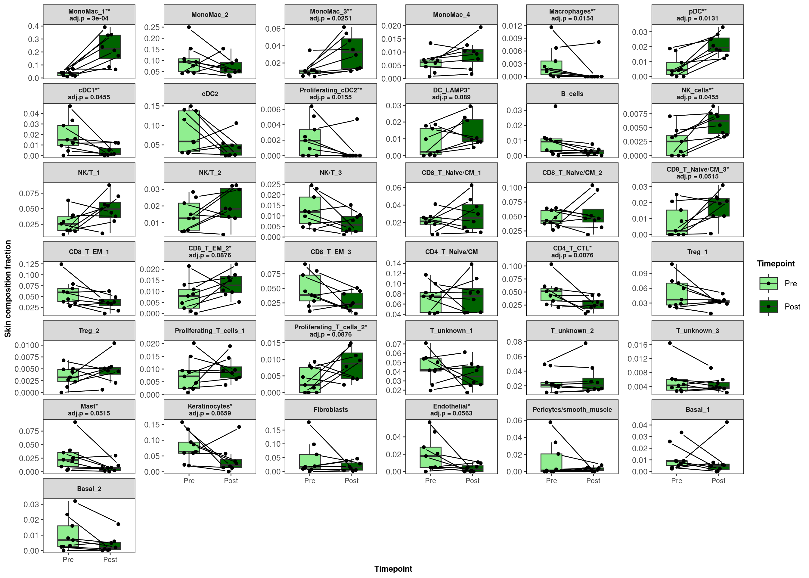
11.2 Plot the same except now facet both by Cluster and Ipilimumab concentration cohort
rownames_to_column(as.data.frame(merged.18279.skin.singlets@meta.data),var="Barcode") %>%
as_tibble() %>%
dplyr::select(Barcode,sub.cluster,Sample,CellAnnotation) %>%
group_by(CellAnnotation,Sample) %>%
summarize(n = dplyr::n()) %>%
ungroup() %>%
complete(Sample,CellAnnotation) %>% # Makes sure 0s get represented rather than omitted
mutate(n = replace_na(n,0)) %>%
mutate(Patient = str_split_i(Sample,pattern = "_",i = 1)) %>%
mutate(Site = str_split_i(Sample,pattern = "_",i = 2)) %>%
mutate(Timepoint = str_split_i(Sample,pattern = "_",i = 3)) %>%
mutate(Timepoint = str_replace_all(Timepoint,"3rd","")) %>%
mutate(IpiCohort = str_split_i(Sample,pattern = "_",i = 4)) %>%
mutate(Sample = str_replace_all(Sample,"_.{1,3}mgIpi_RNA","")) %>%
right_join(totalsPerSample,.,by="Sample") %>%
group_by(Sample) %>%
mutate(Proportion = n / TotalCells) %>%
left_join(sigProps,by = c("CellAnnotation" = "Annot")) %>%
mutate(CellAnnotation = factor(CellAnnotation, levels = cluster_annot[cluster_order])) %>%
ungroup() %>%
ggplot(aes(x = fct_relevel(Timepoint,c("Pre","Post")),
y = Proportion,
fill = fct_relevel(Timepoint,c("Pre","Post"))
)
) +
geom_boxplot(outlier.shape=NA, width = 0.5) +
geom_point(aes(color = Patient), position = position_jitterdodge(jitter.width=0.1,dodge.width = 0.4)) +
facet_grid(CellAnnotation~IpiCohort,scales="free") +
theme_bw() +
theme(axis.text.y = element_text(size=10),
strip.text = element_text(size=8,face="bold"),
axis.title = element_text(size=10,face="bold"),
legend.text = element_text(size=10),
legend.title = element_text(size=10,face="bold"),
legend.key.size = unit(2,"line"),
panel.grid = element_blank(),
panel.grid.minor = element_blank(),
panel.border = element_rect(fill = NA, color = "black"),
axis.text.x = element_text(angle = 90, vjust = 0.5, hjust=1)
) +
xlab("Timepoint") +
ylab("Skin composition fraction") +
labs(fill = "Cohort", color = "Patient") +
scale_color_manual(values = c("#59A14FFF",
"#B07AA1FF",
"#76B7B2FF",
"#FBB258FF",
"#DC050CFF",
"#F6AAC9FF",
"#5CA2E5FF",
"#615EBFFF",
"#826250FF")) +
scale_fill_manual(values=c("lightgreen","darkgreen"))`summarise()` has grouped output by 'CellAnnotation'. You can override using
the `.groups` argument.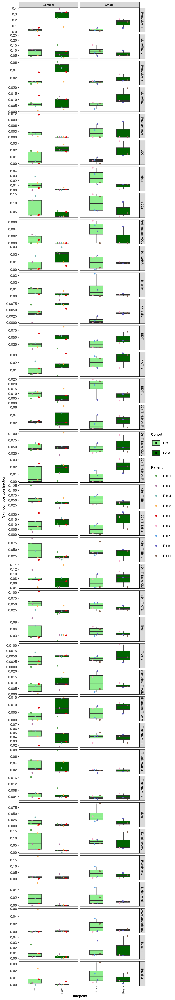
11.3 Prepare UMAP with clusters of interest circled
umap_circled <- umap %>%
ggplot(aes(x = umapharmony_1, y = umapharmony_2, color = CellAnnotation)) +
geom_point(size = 0.25) +
theme_classic() +
geom_shape(data = umap %>% dplyr::filter(sub.cluster=="0"),
stat = "ellipse",
expand = unit(0.25, 'cm'),
fill = NA,
color = "black",
linetype = 2) +
geom_shape(data = umap %>% dplyr::filter(sub.cluster=="12"),
stat = "ellipse",
expand = unit(0.25, 'cm'),
fill = NA,
color = "black",
linetype = 2) +
geom_shape(data = umap %>% dplyr::filter(sub.cluster=="15"),
stat = "ellipse",
expand = unit(0.25, 'cm'),
fill = NA,
color = "black",
linetype = 2) +
geom_shape(data = umap %>% dplyr::filter(sub.cluster=="5_2"),
stat = "ellipse",
expand = unit(0.25, 'cm'),
fill = NA,
color = "black",
linetype = 2) +
guides(color = "none")
umap_circled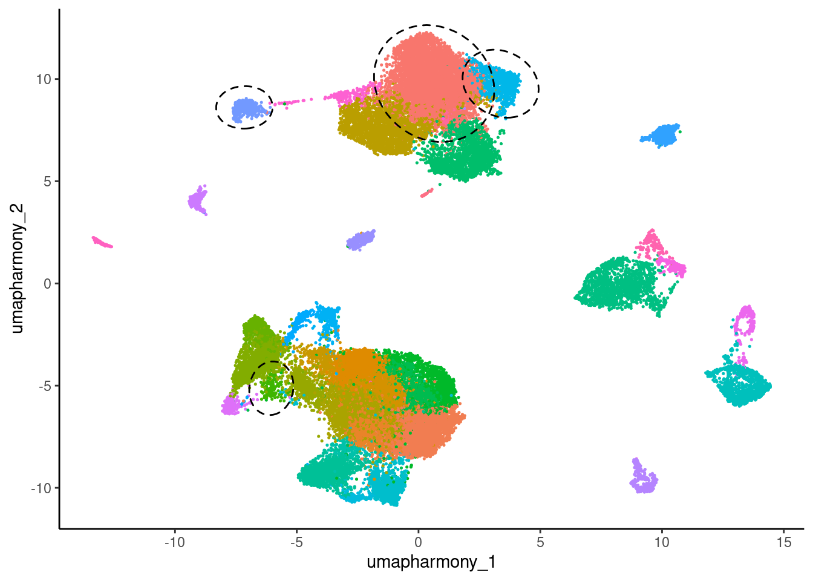
11.4 For each cluster of interest, plot differentially expressed genes as a heatmap and add annotation layer illustrating changing cell proportions
11.4.1 Create function for centering expression values around mean of Pre3rd samples
controlCenter <- function(data_matrix = NULL, pattern_for_controls = NULL, pattern_for_others = NULL) {
stopifnot(is.matrix(data_matrix))
ctrl_means <- apply(data_matrix, 1, function(x) {mean(x[grep(pattern_for_controls,colnames(data_matrix))])})
data_matrix_centered <- as.data.frame(matrix(data=NA,nrow=length(rownames(data_matrix)),ncol=length(colnames(data_matrix))))
rownames(data_matrix_centered) <- rownames(data_matrix)
colnames(data_matrix_centered) <- colnames(data_matrix)[c(grep(pattern_for_controls,colnames(data_matrix)),grep(pattern_for_others,colnames(data_matrix)))]
for (i in 1:length(ctrl_means)) {
data_matrix_centered[i,] <- as.numeric(data_matrix[i,c(grep(pattern_for_controls,colnames(data_matrix)),grep(pattern_for_others,colnames(data_matrix)))]) - as.numeric(ctrl_means[i])
}
return <- data_matrix_centered
}11.4.2 Create pseudobulks for plotting
Use mean (rather than sum) to control for varying number of cells
(mergedCondition.sce <- prepSCE(merged.sce,
kid = "sub.cluster",
gid = "Timepoint",
sid = "Sample",
drop = TRUE))class: SingleCellExperiment
dim: 61217 33397
metadata(1): experiment_info
assays(2): counts logcounts
rownames(61217): 5-8S-rRNA 5S-rRNA ... ZZEF1 ZZZ3
rowData names(0):
colnames(33397): P101_Skin_Pre3rd_2.5mgIpi_RNA_GCACATAAGTGCCATT
P101_Skin_Pre3rd_2.5mgIpi_RNA_GGAACTTGTCGCGGTT ...
P111_Skin_Post3rd_5mgIpi_RNA_ACGATGTTCCTAGGGC
P111_Skin_Post3rd_5mgIpi_RNA_GAACATCAGCCACGTC
colData names(3): cluster_id sample_id group_id
reducedDimNames(4): PCA UMAP.UNINTEGRATED INTEGRATED.HARMONY
UMAP.HARMONY
mainExpName: RNA
altExpNames(0):pb <- aggregateData(mergedCondition.sce,
assay = "counts",
fun = "mean",
by = c("cluster_id", "sample_id"))11.4.3 Create cell proportion table per Sample and per sub-cluster
props <- rownames_to_column(as.data.frame(merged.18279.skin.singlets@meta.data),var="Barcode") %>%
as_tibble() %>%
dplyr::select(Barcode,CellAnnotation,Sample) %>%
mutate(Sample = str_replace_all(Sample,"_.{1,3}mgIpi_RNA","")) %>%
group_by(CellAnnotation,Sample) %>%
summarize(n = dplyr::n()) %>%
ungroup() %>%
complete(Sample,CellAnnotation) %>% # Makes sure 0s get represented rather than omitted
mutate(n = replace_na(n,0)) %>%
mutate(Patient = str_split_i(Sample,pattern = "_",i = 1)) %>%
mutate(Site = str_split_i(Sample,pattern = "_",i = 2)) %>%
mutate(Timepoint = str_split_i(Sample,pattern = "_",i = 3)) %>%
mutate(Timepoint = str_replace_all(Timepoint,"3rd","")) %>%
right_join(totalsPerSample,.,by="Sample") %>%
mutate(Sample = str_replace_all(Sample,"_Skin","")) %>%
mutate(Sample = str_replace_all(Sample,"3rd","")) %>%
group_by(Sample) %>%
mutate(Proportion = n / TotalCells)`summarise()` has grouped output by 'CellAnnotation'. You can override using
the `.groups` argument.props# A tibble: 629 × 8
# Groups: Sample [17]
Sample TotalCells CellAnnotation n Patient Site Timepoint Proportion
<chr> <dbl> <fct> <int> <chr> <chr> <chr> <dbl>
1 P101_Post 1718 MonoMac_1 410 P101 Skin Post 0.239
2 P101_Post 1718 CD4_T_Naive/CM 74 P101 Skin Post 0.0431
3 P101_Post 1718 CD4_T_CTL 15 P101 Skin Post 0.00873
4 P101_Post 1718 CD8_T_EM_1 70 P101 Skin Post 0.0407
5 P101_Post 1718 CD8_T_Naive/CM… 25 P101 Skin Post 0.0146
6 P101_Post 1718 CD8_T_EM_2 18 P101 Skin Post 0.0105
7 P101_Post 1718 MonoMac_2 264 P101 Skin Post 0.154
8 P101_Post 1718 CD8_T_Naive/CM… 80 P101 Skin Post 0.0466
9 P101_Post 1718 CD8_T_Naive/CM… 1 P101 Skin Post 0.000582
10 P101_Post 1718 NK/T_1 18 P101 Skin Post 0.0105
# ℹ 619 more rows11.4.4 Cluster 0
# Subset to genes of interest and reorder columns
cluster <- "0"
goi <- c("IL6","TNF","CXCL10","CXCL11","CCL2","CCL3","CCL4","CCL5","CCL8","IL15","SELL")
pb_cluster <- assays(pb)[[cluster]][goi,]
pb_cluster_cnames <- str_replace_all(str_replace_all(colnames(pb_cluster),"3rd_.{1,3}mgIpi_RNA",""),"_Skin","")
colnames(pb_cluster) <- pb_cluster_cnames
pb_cluster_cnames_sorted <- pb_cluster_cnames[c(which(grepl("Pre",pb_cluster_cnames)),which(grepl("Post",pb_cluster_cnames)))]
# Subset proportions table
cluster_props <- props %>%
dplyr::filter(CellAnnotation == cluster_annot[cluster]) %>%
dplyr::select(Sample,Proportion) %>%
ungroup() %>%
mutate(Sample = fct_relevel(as.factor(Sample),pb_cluster_cnames_sorted)) %>%
dplyr::arrange(Sample) %>%
as.data.frame()
# Center expression around mean of Pre samples
pb_centered <- controlCenter(pb_cluster[,pb_cluster_cnames_sorted], pattern_for_controls = "Pre", pattern_for_others = "Post")
# Plot heatmap
timepoints <- as.factor(str_split_i(pb_cluster_cnames_sorted,"_",2))
ha1 <- HeatmapAnnotation(Timepoint = timepoints,
show_legend = FALSE,
col = list(Timepoint = setNames(c("lightgreen", "darkgreen"), c("Pre", "Post"))),
border = TRUE)
ha2 <- HeatmapAnnotation(Proportion = anno_barplot(round(cluster_props$Proportion,3),
gp = gpar(fill = c(
rep("lightgreen",length(which(str_detect(cluster_props$Sample,"Pre")))),
rep("darkgreen",length(which(str_detect(cluster_props$Sample,"Post"))))
)
),
add_numbers = TRUE,
numbers_rot = 0
)
)
p0 <- ComplexHeatmap::Heatmap(pb_centered,
cluster_rows = FALSE,
cluster_columns = FALSE,
column_split = factor(timepoints,levels = c("Pre","Post")),
column_labels = str_replace_all(colnames(pb_centered),"_Pre|_Post",""),
row_names_gp = gpar(fontface = "italic",fontsize = 8),
column_names_gp = gpar(fontsize = 8),
col = colorRamp2(c(0,5),hcl_palette = "viridis"),
border = TRUE,
column_title = paste0("Cluster ", cluster, ": ",cluster_annot[cluster]),
column_title_gp = gpar(fontface = "bold"),
name = "Expression relative to Pre",
top_annotation = c(ha1,ha2),
show_heatmap_legend = FALSE
) %>%
draw() %>%
grid.grabExpr()Warning: The input is a data frame-like object, convert it to a matrix.11.4.5 Cluster 12
# Subset to genes of interest and reorder columns
cluster <- "12"
goi <- c("CXCL10","CXCL9","CXCL11","CCL8","IL18","IL6","TNF")
pb_cluster <- assays(pb)[[cluster]][goi,]
pb_cluster_cnames <- str_replace_all(str_replace_all(colnames(pb_cluster),"3rd_.{1,3}mgIpi_RNA",""),"_Skin","")
colnames(pb_cluster) <- pb_cluster_cnames
pb_cluster_cnames_sorted <- pb_cluster_cnames[c(which(grepl("Pre",pb_cluster_cnames)),which(grepl("Post",pb_cluster_cnames)))]
# Subset proportions table
cluster_props <- props %>%
dplyr::filter(CellAnnotation == cluster_annot[cluster]) %>%
dplyr::select(Sample,Proportion) %>%
ungroup() %>%
mutate(Sample = fct_relevel(as.factor(Sample),pb_cluster_cnames_sorted)) %>%
dplyr::arrange(Sample) %>%
as.data.frame()
# Center expression around mean of Pre samples
pb_centered <- controlCenter(pb_cluster[,pb_cluster_cnames_sorted], pattern_for_controls = "Pre", pattern_for_others = "Post")
# Plot heatmap
timepoints <- as.factor(str_split_i(pb_cluster_cnames_sorted,"_",2))
ha1 <- HeatmapAnnotation(Timepoint = timepoints,
show_legend = FALSE,
col = list(Timepoint = setNames(c("lightgreen", "darkgreen"), c("Pre", "Post"))),
border = TRUE)
ha2 <- HeatmapAnnotation(Proportion = anno_barplot(round(cluster_props$Proportion,3),
gp = gpar(fill = c(
rep("lightgreen",length(which(str_detect(cluster_props$Sample,"Pre")))),
rep("darkgreen",length(which(str_detect(cluster_props$Sample,"Post"))))
)
),
add_numbers = TRUE,
numbers_rot = 0
)
)
p12 <- ComplexHeatmap::Heatmap(pb_centered,
cluster_rows = FALSE,
cluster_columns = FALSE,
column_split = factor(timepoints,levels = c("Pre","Post")),
column_labels = str_replace_all(colnames(pb_centered),"_Pre|_Post",""),
row_names_gp = gpar(fontface = "italic",fontsize = 8),
column_names_gp = gpar(fontsize = 8),
col = colorRamp2(c(0,5),hcl_palette = "viridis"),
border = TRUE,
column_title = paste0("Cluster ", cluster, ": ", cluster_annot[cluster]),
column_title_gp = gpar(fontface = "bold"),
name = "Expression relative to Pre",
top_annotation = c(ha1,ha2),
show_heatmap_legend = FALSE
) %>%
draw() %>%
grid.grabExpr()Warning: The input is a data frame-like object, convert it to a matrix.11.4.6 Cluster 15
# Subset to genes of interest and reorder columns
cluster <- "15"
goi <- c("CCL19","CD40","CD86","CXCL9")
pb_cluster <- assays(pb)[[cluster]][goi,]
pb_cluster_cnames <- str_replace_all(str_replace_all(colnames(pb_cluster),"3rd_.{1,3}mgIpi_RNA",""),"_Skin","")
colnames(pb_cluster) <- pb_cluster_cnames
pb_cluster_cnames_sorted <- pb_cluster_cnames[c(which(grepl("Pre",pb_cluster_cnames)),which(grepl("Post",pb_cluster_cnames)))]
# Subset proportions table
cluster_props <- props %>%
dplyr::filter(CellAnnotation == cluster_annot[cluster]) %>%
dplyr::select(Sample,Proportion) %>%
ungroup() %>%
mutate(Sample = fct_relevel(as.factor(Sample),pb_cluster_cnames_sorted)) %>%
dplyr::arrange(Sample) %>%
as.data.frame()
# Center expression around mean of Pre samples
pb_centered <- controlCenter(pb_cluster[,pb_cluster_cnames_sorted], pattern_for_controls = "Pre", pattern_for_others = "Post")
# Plot heatmap
timepoints <- as.factor(str_split_i(pb_cluster_cnames_sorted,"_",2))
ha1 <- HeatmapAnnotation(Timepoint = timepoints,
show_legend = FALSE,
col = list(Timepoint = setNames(c("lightgreen", "darkgreen"), c("Pre", "Post"))),
border = TRUE)
ha2 <- HeatmapAnnotation(Proportion = anno_barplot(round(cluster_props$Proportion,3),
gp = gpar(fill = c(
rep("lightgreen",length(which(str_detect(cluster_props$Sample,"Pre")))),
rep("darkgreen",length(which(str_detect(cluster_props$Sample,"Post"))))
)
),
add_numbers = TRUE,
numbers_rot = 0
)
)
p15 <- ComplexHeatmap::Heatmap(pb_centered,
cluster_rows = FALSE,
cluster_columns = FALSE,
column_split = factor(timepoints,levels = c("Pre","Post")),
column_labels = str_replace_all(colnames(pb_centered),"_Pre|_Post",""),
row_names_gp = gpar(fontface = "italic",fontsize = 8),
column_names_gp = gpar(fontsize = 8),
col = colorRamp2(c(0,5),hcl_palette = "viridis"),
border = TRUE,
column_title = paste0("Cluster ", cluster, ": ",cluster_annot[cluster]),
column_title_gp = gpar(fontface = "bold"),
name = "Expression relative to Pre",
top_annotation = c(ha1,ha2),
show_heatmap_legend = FALSE
) %>%
draw() %>%
grid.grabExpr()Warning: The input is a data frame-like object, convert it to a matrix.11.4.7 Cluster 5_2
# Subset to genes of interest and reorder columns
cluster <- "5_2"
goi <- c("GNLY","GZMB","PRF1")
pb_cluster <- assays(pb)[[cluster]][goi,]
pb_cluster_cnames <- str_replace_all(str_replace_all(colnames(pb_cluster),"3rd_.{1,3}mgIpi_RNA",""),"_Skin","")
colnames(pb_cluster) <- pb_cluster_cnames
pb_cluster_cnames_sorted <- pb_cluster_cnames[c(which(grepl("Pre",pb_cluster_cnames)),which(grepl("Post",pb_cluster_cnames)))]
# Subset proportions table
cluster_props <- props %>%
dplyr::filter(CellAnnotation == cluster_annot[cluster]) %>%
dplyr::select(Sample,Proportion) %>%
ungroup() %>%
mutate(Sample = fct_relevel(as.factor(Sample),pb_cluster_cnames_sorted)) %>%
dplyr::arrange(Sample) %>%
as.data.frame()
# Center expression around mean of Pre samples
pb_centered <- controlCenter(pb_cluster[,pb_cluster_cnames_sorted], pattern_for_controls = "Pre", pattern_for_others = "Post")
# Plot heatmap
timepoints <- as.factor(str_split_i(pb_cluster_cnames_sorted,"_",2))
ha1 <- HeatmapAnnotation(Timepoint = timepoints,
show_legend = FALSE,
col = list(Timepoint = setNames(c("lightgreen", "darkgreen"), c("Pre", "Post"))),
border = TRUE)
ha2 <- HeatmapAnnotation(Proportion = anno_barplot(round(cluster_props$Proportion,3),
gp = gpar(fill = c(
rep("lightgreen",length(which(str_detect(cluster_props$Sample,"Pre")))),
rep("darkgreen",length(which(str_detect(cluster_props$Sample,"Post"))))
)
),
add_numbers = TRUE,
numbers_rot = 0
)
)
p5_2 <- ComplexHeatmap::Heatmap(pb_centered,
cluster_rows = FALSE,
cluster_columns = FALSE,
column_split = factor(timepoints,levels = c("Pre","Post")),
column_labels = str_replace_all(colnames(pb_centered),"_Pre|_Post",""),
row_names_gp = gpar(fontface = "italic",fontsize = 8),
column_names_gp = gpar(fontsize = 8),
col = colorRamp2(c(0,5),hcl_palette = "viridis"),
border = TRUE,
column_title = paste0("Cluster ", cluster, ": ",cluster_annot[cluster]),
column_title_gp = gpar(fontface = "bold"),
name = "Expression relative to Pre",
top_annotation = c(ha1,ha2),
show_heatmap_legend = FALSE
) %>%
draw() %>%
grid.grabExpr()Warning: The input is a data frame-like object, convert it to a matrix.11.5 Assemble final figure
wrap_plots(A = p0,
B = p12,
C = p15,
D = p5_2,
U = umap_circled,
design = "C##A
DUUB
#UU#")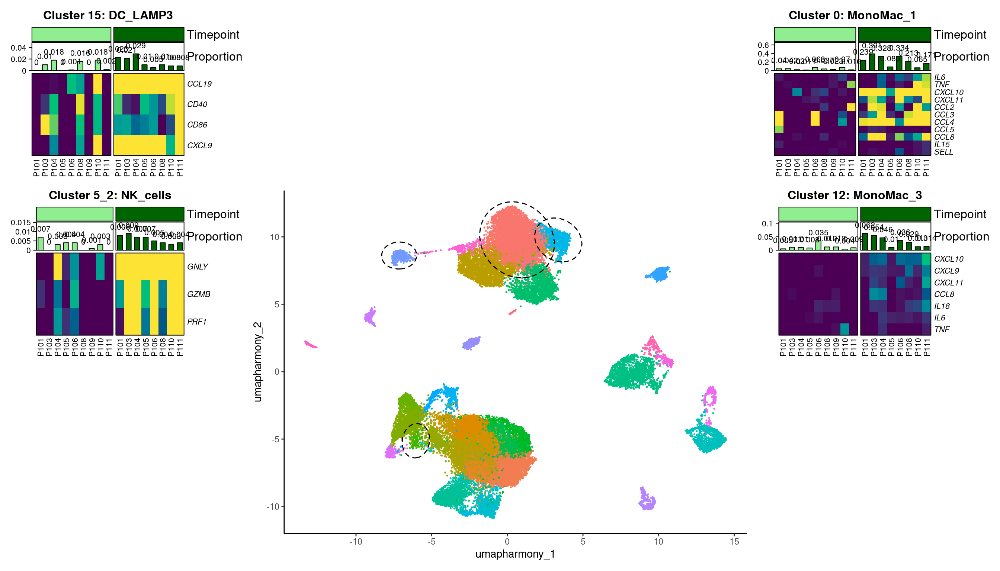
11.6 Get session info
sessionInfo()R version 4.3.1 (2023-06-16)
Platform: x86_64-pc-linux-gnu (64-bit)
Running under: Rocky Linux 8.10 (Green Obsidian)
Matrix products: default
BLAS/LAPACK: /usr/lib64/libopenblasp-r0.3.15.so; LAPACK version 3.9.0
locale:
[1] LC_CTYPE=en_US.UTF-8 LC_NUMERIC=C
[3] LC_TIME=en_US.UTF-8 LC_COLLATE=en_US.UTF-8
[5] LC_MONETARY=en_US.UTF-8 LC_MESSAGES=en_US.UTF-8
[7] LC_PAPER=en_US.UTF-8 LC_NAME=C
[9] LC_ADDRESS=C LC_TELEPHONE=C
[11] LC_MEASUREMENT=en_US.UTF-8 LC_IDENTIFICATION=C
time zone: America/New_York
tzcode source: system (glibc)
attached base packages:
[1] stats4 grid stats graphics grDevices utils datasets
[8] methods base
other attached packages:
[1] knitr_1.45 speckle_1.0.0
[3] cowplot_1.1.3 ggforce_0.4.2
[5] lemon_0.4.9 scuttle_1.10.3
[7] limma_3.56.2 muscat_1.14.0
[9] SingleCellExperiment_1.22.0 SummarizedExperiment_1.30.2
[11] Biobase_2.60.0 GenomicRanges_1.52.1
[13] GenomeInfoDb_1.36.4 IRanges_2.34.1
[15] S4Vectors_0.38.2 BiocGenerics_0.46.0
[17] MatrixGenerics_1.12.3 matrixStats_1.2.0
[19] circlize_0.4.15 ComplexHeatmap_2.16.0
[21] msigdbr_7.5.1 paletteer_1.6.0
[23] patchwork_1.3.0 lubridate_1.9.3
[25] forcats_1.0.0 stringr_1.5.1
[27] dplyr_1.1.4 purrr_1.0.2
[29] readr_2.1.5 tidyr_1.3.1
[31] tibble_3.2.1 tidyverse_2.0.0
[33] Seurat_5.1.0 SeuratObject_5.0.2
[35] sp_2.1-3 ggplot2_3.5.1
[37] presto_1.0.0 data.table_1.15.0
[39] Rcpp_1.0.12
loaded via a namespace (and not attached):
[1] spatstat.sparse_3.0-3 bitops_1.0-7
[3] httr_1.4.7 RColorBrewer_1.1-3
[5] doParallel_1.0.17 numDeriv_2016.8-1.1
[7] backports_1.4.1 tools_4.3.1
[9] sctransform_0.4.1 utf8_1.2.4
[11] R6_2.5.1 lazyeval_0.2.2
[13] uwot_0.1.16 mgcv_1.9-1
[15] GetoptLong_1.0.5 withr_3.0.0
[17] prettyunits_1.2.0 gridExtra_2.3
[19] SeuratWrappers_0.3.19 progressr_0.14.0
[21] cli_3.6.2 Cairo_1.6-2
[23] spatstat.explore_3.2-6 fastDummies_1.7.3
[25] sandwich_3.1-0 labeling_0.4.3
[27] mvtnorm_1.2-4 spatstat.data_3.0-4
[29] blme_1.0-5 ggridges_0.5.6
[31] pbapply_1.7-2 R.utils_2.12.3
[33] scater_1.28.0 parallelly_1.37.0
[35] generics_0.1.3 shape_1.4.6
[37] gtools_3.9.5 ica_1.0-3
[39] spatstat.random_3.2-2 Matrix_1.6-4
[41] ggbeeswarm_0.7.2 fansi_1.0.6
[43] abind_1.4-5 R.methodsS3_1.8.2
[45] lifecycle_1.0.4 multcomp_1.4-25
[47] yaml_2.3.8 edgeR_3.42.4
[49] gplots_3.1.3.1 Rtsne_0.17
[51] promises_1.2.1 crayon_1.5.2
[53] miniUI_0.1.1.1 lattice_0.22-5
[55] beachmat_2.16.0 magick_2.8.3
[57] pillar_1.9.0 rjson_0.2.21
[59] boot_1.3-29 estimability_1.4.1
[61] future.apply_1.11.1 codetools_0.2-19
[63] leiden_0.4.3.1 glue_1.7.0
[65] remotes_2.4.2.1 vctrs_0.6.5
[67] png_0.1-8 spam_2.10-0
[69] Rdpack_2.6 gtable_0.3.4
[71] rematch2_2.1.2 xfun_0.42
[73] rbibutils_2.2.16 S4Arrays_1.2.0
[75] mime_0.12 coda_0.19-4.1
[77] reformulas_0.4.0 survival_3.5-8
[79] iterators_1.0.14 statmod_1.5.0
[81] ellipsis_0.3.2 fitdistrplus_1.1-11
[83] TH.data_1.1-2 ROCR_1.0-11
[85] nlme_3.1-164 pbkrtest_0.5.2
[87] EnvStats_2.8.1 progress_1.2.3
[89] RcppAnnoy_0.0.22 TMB_1.9.10
[91] irlba_2.3.5.1 vipor_0.4.7
[93] KernSmooth_2.23-22 colorspace_2.1-0
[95] nnet_7.3-19 DESeq2_1.40.2
[97] tidyselect_1.2.0 emmeans_1.10.0
[99] compiler_4.3.1 BiocNeighbors_1.18.0
[101] DelayedArray_0.26.7 plotly_4.10.4
[103] caTools_1.18.2 scales_1.3.0
[105] remaCor_0.0.18 lmtest_0.9-40
[107] digest_0.6.34 goftest_1.2-3
[109] spatstat.utils_3.0-4 minqa_1.2.6
[111] variancePartition_1.30.2 rmarkdown_2.25
[113] aod_1.3.3 RhpcBLASctl_0.23-42
[115] XVector_0.40.0 htmltools_0.5.7
[117] pkgconfig_2.0.3 lme4_1.1-35.1
[119] sparseMatrixStats_1.12.2 highr_0.10
[121] fastmap_1.1.1 rlang_1.1.3
[123] GlobalOptions_0.1.2 htmlwidgets_1.6.4
[125] shiny_1.8.0 DelayedMatrixStats_1.22.6
[127] farver_2.1.1 zoo_1.8-12
[129] jsonlite_1.8.8 BiocParallel_1.34.2
[131] R.oo_1.26.0 BiocSingular_1.16.0
[133] RCurl_1.98-1.14 magrittr_2.0.3
[135] modeltools_0.2-23 GenomeInfoDbData_1.2.10
[137] dotCall64_1.1-1 munsell_0.5.0
[139] viridis_0.6.5 babelgene_22.9
[141] reticulate_1.35.0 stringi_1.8.3
[143] zlibbioc_1.46.0 MASS_7.3-60.0.1
[145] flexmix_2.3-19 plyr_1.8.9
[147] parallel_4.3.1 listenv_0.9.1
[149] ggrepel_0.9.5 deldir_2.0-2
[151] splines_4.3.1 tensor_1.5
[153] hms_1.1.3 locfit_1.5-9.8
[155] igraph_2.0.2 spatstat.geom_3.2-8
[157] RcppHNSW_0.6.0 ScaledMatrix_1.8.1
[159] reshape2_1.4.4 evaluate_0.23
[161] BiocManager_1.30.22 tweenr_2.0.2
[163] nloptr_2.0.3 tzdb_0.4.0
[165] foreach_1.5.2 httpuv_1.6.14
[167] RANN_2.6.1 polyclip_1.10-6
[169] future_1.33.1 clue_0.3-65
[171] scattermore_1.2 rsvd_1.0.5
[173] broom_1.0.5 xtable_1.8-4
[175] RSpectra_0.16-1 later_1.3.2
[177] viridisLite_0.4.2 lmerTest_3.1-3
[179] glmmTMB_1.1.10 beeswarm_0.4.0
[181] cluster_2.1.6 timechange_0.3.0
[183] globals_0.16.2